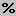

Homework 7: Exponential Modeling with
Percentages
Quantitative Reasoning -
ISP 120
1. A ticket to the Lovehammers concert at Metro was marked up by 95.5%. If the original price was $10, what was the final price including fees (the marked up price)?
2. On August 16, 2005, one share of Telephone & Data Systems Inc. stock cost $42.90. On September 2, 2005, the stock closed 5% lower than the price on August 16th. What was the cost of one share of Telephone & Data Systems Inc. stock on September 2nd?
3. Population: In 2005, the 2004 populations and projected population rates were released for Russia and Nigeria. The population of the Russia in 2004 was 143.8 million; the population of Nigeria was 129 million. Russia is decreasing in population by approximately 0.7% annually; the population of Nigeria is growing at 2.4%. Using Excel or a calculator, predict the year when Nigeria's population will exceed Russia's, assuming that the current trend continues. How much faith do you have in your answer? What factors could affect the validity of your prediction?
Relative/Percentage Change
Relative Change = =
For communication purposes, we convert relative change, which is a fraction (converted to a decimal number) to a percentage (percentage change). The following are three ways to convert a fraction (decimal number) to a percentage:
Move the decimal place to the right two places
Multiply by 100%
Use the 
For this course, we will generally show percentages formatted to two (2) decimal places (unless stated otherwise).
4. Chicken Bacteria: The information given below was found on the label of a package of Chicken.
Bacteria Count on Chicken
(per square centimeter when refrigerated at 40º F)
| Day | Bacteria | Condition |
| 0 | 360 | OK |
| 1 | 5,760 | OK |
| 2 | 92,160 | Fair |
| 3 | 1,474,560 | Poor |
| 4 | 23,592,960 | Odor |
| 5 | 377,487,360 | Slime |
It is also noted on the label that at 40º F, the bacteria double in number every 6 hours.
a. By using the percentage change formula above, show that the above data is exponential. What is the percentage increase in bacteria each day?
b. Make a new table showing the bacteria count every 6 hours. To get you started, you table should look like this:
| Hour | Bacteria |
| 0 | 360 |
| 6 | |
| 12 | |
| 18 | |
| 24 | |
| 30 |
You should continue your hours column to 120 hours. Paste your Excel table in your word document.
c. What is the percentage increase in bacteria every six hours?
4. On December 10, 1999 the Dear Ann Landers (The Holland Sentinel, December 1999) column ran a letter that claimed:
When Elvis Presley died in 1977, there were 48 professional Elvis impersonators. In 1996, there were 7,328. If this rate of growth continues, by the year 2012, one person in every four will be an Elvis impersonator.
a. According to this claim, why would the Elvis impersonator function be exponential? What are the key words?
b. Find the "Elvis impersonator" exponential function that fits the 1977 through 1996 data. You can figure out the equation by using Excel (trial and error) or the formula:
y = P(1+r)x
c. Using the function you derived above, find the number of predicted Elvis impersonators in 2012.
d. Estimate the population of the United States in 2012. The population of the United States in 2004 was 290.0 million and is estimated to grow .6% per year.
e. Using your estimates from c and d, does it appear that one person in every four will be an Elvis impersonator? If not, please enter the rate you calculated.